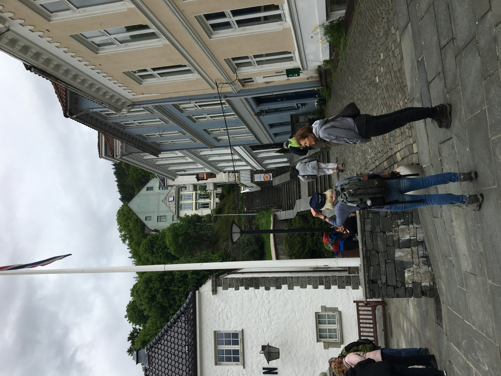
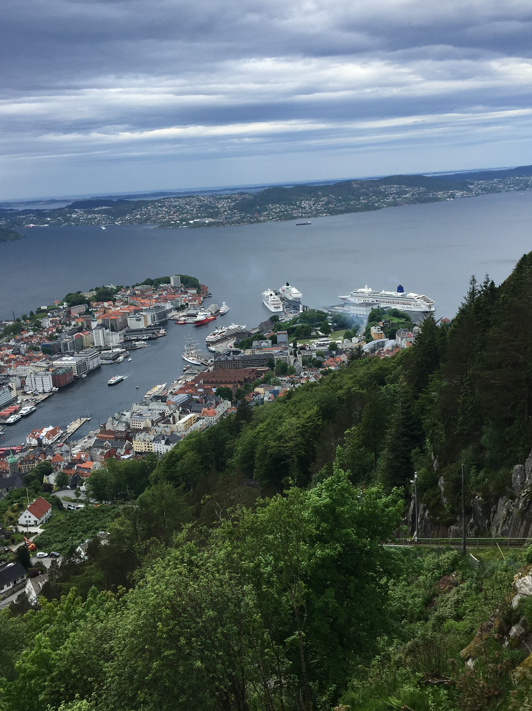

Norway Cruise 2017
Wednesday June 7th 2017
Throughout the early hours of the morning, Aurora maintained southerly courses along the Norwegian
Coast. Aurora altered her course to the east passing south of Fedje Island, and entering Hjeltenfjorden. Under the local pilot's
guidance, Aurora passed under the Byfjorden Bridge to her berth in Bergen.

Situated on a promontory surrounded by seven hills, Bergen is known as the "Gateway to the Fjords". The city has had a distinguished
history, and was formerly the capital. Today it is Norway's second largest city, the leading west coast port, and a major cultural
centre.
King Olav III Haraldsson, known as "The Peaceful" even though he fought at the Battle of Stamford Brisge in 1066 where his father was
killed, founded a settlement here in 1070. Bjorgvin, 'the pasture between the mountains', rapidly grew in importance with the building
of a castle and church in about 1100. During the 12th and 13th century the developing town was centred around the harbour. It was
the favourite royal residence, and several kings were crowned in the cathedral. In 1343 Bergen became one of the ports of the
German Hanseatic League, and trade increased dramatically. A trading factory was eastablished and the Bryggen Quay area is a
reminder of that period.

For 200 years the Hansa merchants reigned supreme; the city flourished and there were more than 30 churches and monasteries. However, the
Reformation had an impact. The last Hansa merchant left the port in 1764. A serious fire in 1702, one of many in Bergen's history, also had
a disastrous effect.The 18th and 19th centuries saw Norwegian merchants return to Bergen, and the port again flourished. The city also
became one of the leading centres of culture in Scandanavia. Edvard Grieg was born in the city. The Bergen Philharmonic Orchestra was
performing from 1765 and Norway's first national theatre was established in 1850.
Mum and I were booked on a bus excursion called Leisurely Bergen, leaving at 11.30am, leaving lots of time for a leisurely breakfast.
The tour took us past King Hakon's Hall and Rosenkrantz Tower. Then continued along Bryggen, the hanseatic quartr of Bergen, with
its old, picturesque wooden buildings, to the funicular station of Floibanen, Mount Floien, being one of the seven surrounding hills.
Mum didn't feel able to go up on the funicular, so she stayed on the coach, whilst I went up to the viewpoint.
The funicular is one of Norway's famous attractions. It takes 6 minutes to get to the top, 320m above sea level. Other highlights included
the royal palace (royal standard was flying so a royal was in residence) and the leper hospital (Gerhard Hansen was the Norwegian physician
who identified the bacterium Mycobacterium leprae in 1873 as the causative agent of leprosy.)
This was our final Black Tie evening, and we had the pleasure of the Chef's parade.
The top chef's were introduced individually, the lower chef's paraded around the restaurant as did the waiters who carried the incredibly
heavy laden trays of food, and empty plates, to and from the kitchen. Out two table waiters presented us with a copy of each menu for the
week which they had signed.
{kind=link}
{kind=link}
{kind=link}